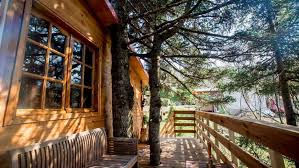
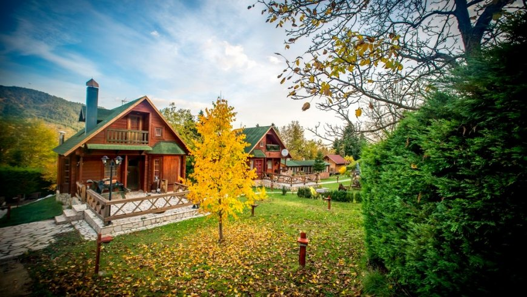
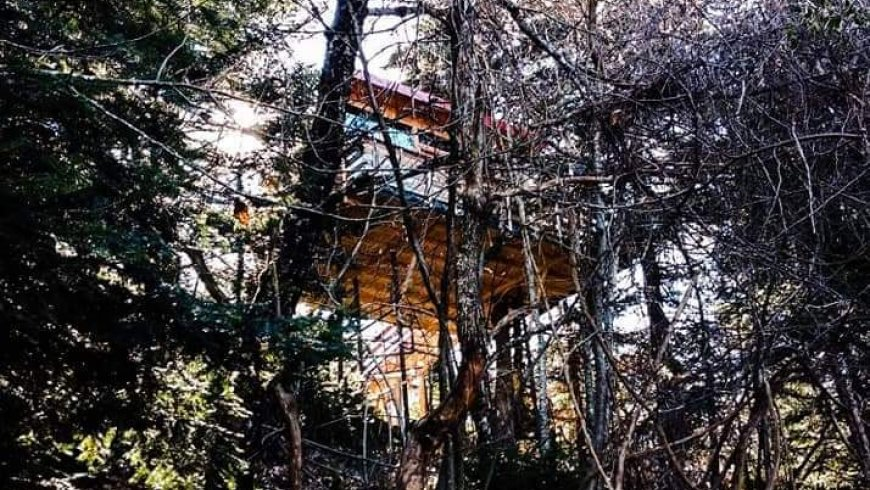
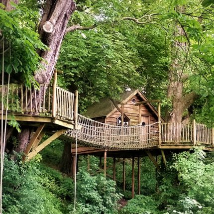

Zήστε μια αξέχαστη εμπειρία
διαμονής στα δεντρόσπιτα,
όπου η φύση και η άνεση
συναντιούνται αρμονικά.
Κάθε δεντρόσπιτο είναι
σχεδιασμένο για να σας
προσφέρει ζεστασιά και
ασφάλεια, ενώ ταυτόχρονα
σας φέρνει σε άμεση επαφή
με το δάσος και
τον καθαρό αέρα.

Ξυπνήστε με το τραγούδι
των πουλιών,
απολαύστε την
ηρεμία και τη
γαλήνη που μόνο
η φύση μπορεί
να προσφέρει και χαλαρώστε
σε έναν χώρο
που συνδυάζει την άνεση
με την οικολογική
φιλοσοφία.

Η διαμονή σε δεντρόσπιτα
ενισχύει τη σύνδεση
με το φυσικό περιβάλλον,
μειώνει το στρες και προσφέρει
μοναδικές στιγμές ανανέωσης
και ηρεμίας.

Είναι η ιδανική
επιλογή για οικογένειες,
ζευγάρια ή μεμονωμένους
ταξιδιώτες που
αναζητούν μια διαφορετική
εμπειρία διακοπών,
μακριά από τη φασαρία της πόλης,
αλλά πάντα με όλες τις σύγχρονες
ανέσεις στη διάθεσή τους.